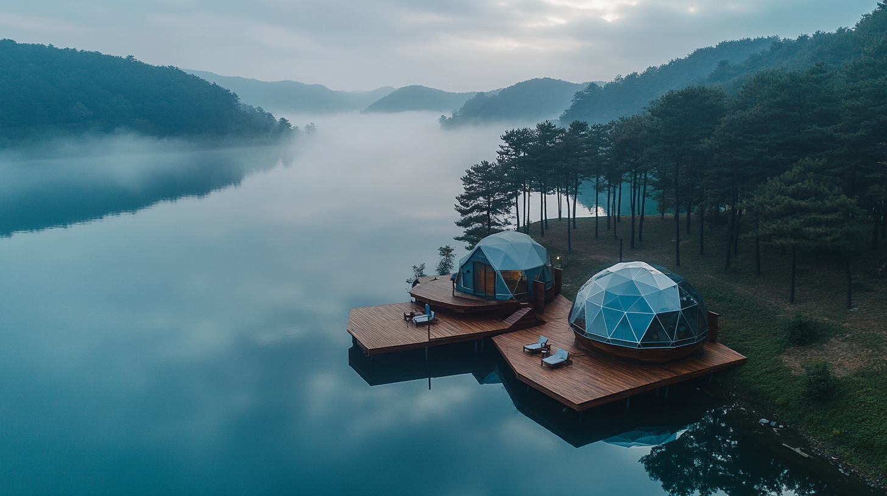

OUR PRODUCTS
최대 15m 돔으로 넓은 면적을 커버. 1~2일 설치, 이벤트 후 신속 철거. VIP 라운지, 미디어 센터, 선수 숙소 등 다목적 활용.
골프 대회 VIP 라운지, 마라톤 현장 쉼터, 스포츠 트레이닝 캠프 — WOCS 글램핑는 어떤 스포츠 이벤트에든 즉시 투입 가능합니다. 브랜드 로고 삽입, 스폰서 배너 설치가 가능하며, 단기 임대 서비스도 제공합니다.
최대 15m 직경의 돔으로 넓은 면적을 효과적으로 커버
이벤트 전 1~2일 내 설치 완료, 이벤트 후 신속 철거
VIP 라운지, 미디어 센터, 선수 대기실 등 다양한 용도

골프 대회·토너먼트 현장의 VIP 라운지, 관중 휴식 공간으로 활용합니다.

선수 숙소와 트레이닝 시설이 결합된 캠프 솔루션을 제공합니다.
아웃도어 스포츠 이벤트 시장 확대
글램핑+스포츠 결합 트렌드 부상
에코 프렌들리 이벤트 인프라 수요
이메일 입력만으로 핵심 자료를 즉시 받아보세요
사진과 텍스트만으로는 결정하기 어렵습니다. 화순 쇼룸에서 실제 글램핑를 만져보고, 16년 경력의 대표가 직접 상담합니다.